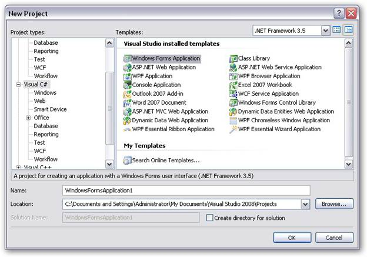
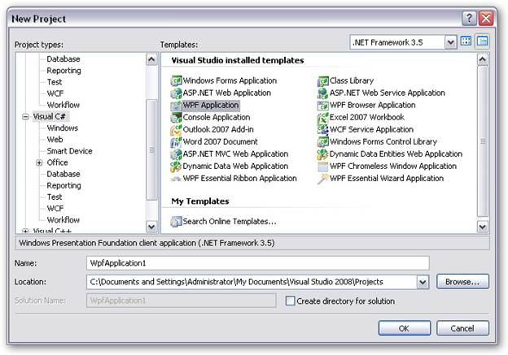

This section illustrates the step-by-step procedure to create the following platform applications:
· Windows
· WPF
Windows Application
1. Open Microsoft Visual Studio. Go to File menu and click New Project. In the New Project dialog box, select Windows Forms Application template, name the project and click OK.

Figure 6: New Project dialog box - Windows Forms Application
A windows application is created.
2. Open the main form of the application in the designer.
3. Add the Syncfusion.Core and Syncfusion.DICOM.Base reference to the project.
WPF Application
1. Open Microsoft Visual Studio. Go to File menu and click New Project. In the New Project dialog box, select WPF Application template, name the project and click OK.

Figure 7: New Project dialog box-WPF Application
A new WPF application is created.
2. Open the main form of the application in the designer.
3. Add the Syncfusion.Core and Syncfusion.DICOM.Base reference to the project.